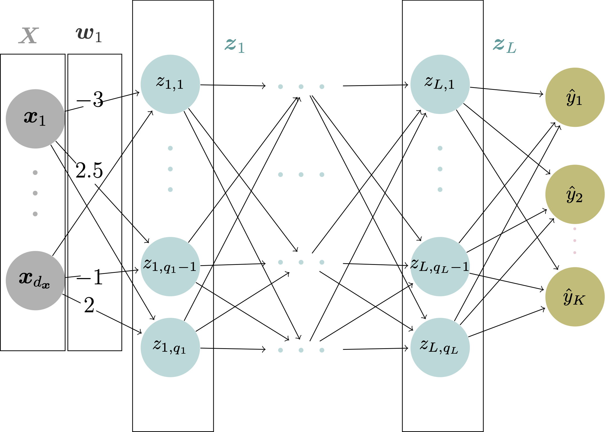

import numpy as np
X = np.array([[1, 2], [3, -1]])
w = np.array([[2], [-1]])
b = np.array([[1], [1]])
print(X @ w + b)[[1]
[8]]ACTL3143 & ACTL5111 Deep Learning for Actuaries

At each node in the hidden and output layers, the value \boldsymbol{z} is calculated as a weighted sum of the node outputs in the previous layer, plus a bias. In other words: \boldsymbol{z} = \boldsymbol{X}\boldsymbol{w} + \boldsymbol{b} where \boldsymbol{X} is a n \times p matrix representing the weights, \boldsymbol{w} is an p \times q matrix representing the weights (q representing the number of neurons in the current layer), and \boldsymbol{b} is an n \times q matrix representing the biases. n represents the number of observations and p represents the dimension of the input.
\boldsymbol{X} = \begin{pmatrix} 1 & 0 & 1\\ 1 & 2 & 1 \end{pmatrix} \boldsymbol{w} = \begin{pmatrix} 1\\ 2 \\1 \end{pmatrix} \boldsymbol{b} = \begin{pmatrix} 2\\ 2 \end{pmatrix}
\boldsymbol{X} = \begin{pmatrix} 1 & -1\\ 0 & 5\\ 2 & -2 \end{pmatrix} \boldsymbol{w} = \begin{pmatrix} 5\\ -7 \end{pmatrix} \boldsymbol{b} = \begin{pmatrix} 1\\ 1 \\ 1 \end{pmatrix}
The result of \boldsymbol{z} = \boldsymbol{X}\boldsymbol{w} + \boldsymbol{b} will be in the range (-\infty, \infty). However, sometimes we might want to constrain the values of \boldsymbol{z}. We apply an to \boldsymbol{z} to do this. Activation functions include:
Given \boldsymbol{z} = \begin{pmatrix} 1 \\ 8 \end{pmatrix}, calculate the resulting vector \boldsymbol{a} = \text{activation}(\boldsymbol{z}) using the four activation functions above.

Hint: Write out
See more details in maths-of-neural-networks.ipynb.
As you have learned, a neural network consists of a set of weights and biases, and the network learns by adjusting these values so that we minimise the network’s loss. Mathematically, we aim to find the optimum weights and biases (\boldsymbol{w}^{*}, \boldsymbol{b}^{*}): \begin{align} (\boldsymbol{w}^{*}, \boldsymbol{b}^{*}) = \underset{\boldsymbol{w}, \boldsymbol{b}}{\text{arg min}}\ \mathcal{L}(\mathcal{D}, (\boldsymbol{w}, \boldsymbol{b})) \nonumber \end{align} where \mathcal{D} denotes the training data set and \mathcal{L}(\cdot, \cdot) is the user-defined loss function.
Gradient descent is the method through which we update the weights and biases. We introduce two types of gradient descent: stochastic and batch.
Notation:
The model is
\hat{y}_i = \hat{y}(\boldsymbol{x}_i) = \boldsymbol{x}_i \boldsymbol{w} + b, \quad i = 1, \ldots, n.
Let’s set p=2 and consider the true weights and bias as
\boldsymbol{w}_{\text{True}} = \begin{pmatrix} 1.5 \\ 1.5 \end{pmatrix}, b_{\,\text{True}} = 0.1.
Let’s just make some toy dataset (batch) to train on:
import numpy as np
# Make up (arbitrarily) 12 observations with two features.
X = np.array([[1, 2],
[3, 1],
[1, 1],
[0, 1],
[2, 2],
[-2, 3],
[1, 2],
[-1, -0.5],
[0.5, 1.2],
[2, 1],
[-2, 3],
[-1, 1]
])
w_true = np.array([[1.5], [1.5]])
b_true = 0.1
y = X @ w_true + b_true
print(X); print(y)[[ 1. 2. ]
[ 3. 1. ]
[ 1. 1. ]
[ 0. 1. ]
[ 2. 2. ]
[-2. 3. ]
[ 1. 2. ]
[-1. -0.5]
[ 0.5 1.2]
[ 2. 1. ]
[-2. 3. ]
[-1. 1. ]]
[[ 4.6 ]
[ 6.1 ]
[ 3.1 ]
[ 1.6 ]
[ 6.1 ]
[ 1.6 ]
[ 4.6 ]
[-2.15]
[ 2.65]
[ 4.6 ]
[ 1.6 ]
[ 0.1 ]]If the batch size is N=3, the first batch of observations is
\boldsymbol{X}_{1:3} = \begin{pmatrix} 1 & 2 \\ 3 & 1 \\ 1 & 1\\ \end{pmatrix} , \boldsymbol{y}_{1:3} = \begin{pmatrix} 4.6 \\ 6.1 \\ 3.1 \\ \end{pmatrix}. For simplicity, we will denote \boldsymbol{X}_{1:3} as \boldsymbol{X} and \boldsymbol{y}_{1:3} as \boldsymbol{y}.
Step 1: Write down \mathcal{L}(\mathcal{D}, (\boldsymbol{w}, {b})) and \hat{\boldsymbol{y}} \begin{align} \mathcal{L}(\mathcal{D}, (\boldsymbol{w}, {b})) =\frac{1}{N} \sum_{i=1}^{N} \big(\hat{y}(\boldsymbol{x}_i) - y_i \big)^2 = \frac{1}{N} (\hat{\boldsymbol{y}} - \boldsymbol{y})^{\top}(\hat{\boldsymbol{y}} - \boldsymbol{y}), \end{align} where \begin{align} \hat{y}(\boldsymbol{x}_i) &= \boldsymbol{x}_i\boldsymbol{w} + b, \\ \hat{\boldsymbol{y}} &= \boldsymbol{X} \boldsymbol{w} + {b}\boldsymbol{1} = \begin{pmatrix} \hat{y}(\boldsymbol{x}_1) \\ \hat{y}(\boldsymbol{x}_2) \\ \hat{y}(\boldsymbol{x}_3) \end{pmatrix}. \\ \nonumber \end{align} with \boldsymbol{1} is a length 3 column vector of ones.
Step 2: Derive \frac{\partial \mathcal{L}}{\partial \boldsymbol{\hat{y}}}, \frac{\partial \boldsymbol{\hat{y}}}{\partial \boldsymbol{w}}, and \frac{\partial \boldsymbol{\hat{y}}}{\partial {b}} \begin{align} \frac{\partial \mathcal{L}}{\partial \boldsymbol{\hat{y}}} &= \frac{2}{N} (\hat{\boldsymbol{y}} - \boldsymbol{y}), \\ \frac{\partial \boldsymbol{\hat{y}}}{\partial \boldsymbol{w}} &= \boldsymbol{X}, \\ \frac{\partial \boldsymbol{\hat{y}}}{\partial {b}} &= \boldsymbol{1} . \\ \nonumber \end{align}
Step 3: Derive \frac{\partial \mathcal{L}}{\partial \boldsymbol{w}} and \frac{\partial \mathcal{L}}{\partial {b}}
\begin{align} \frac{\partial \mathcal{L}}{\partial \boldsymbol{w}} &= \left( \frac{\partial \mathcal{L}}{\partial \boldsymbol{\hat{y}}} \right)^\top \frac{\partial \boldsymbol{\hat{y}}}{\partial \boldsymbol{w}} = \left( \frac{2}{N} (\hat{\boldsymbol{y}} - \boldsymbol{y}) \right)^\top \boldsymbol{X} = \frac{2}{N} \boldsymbol{X}^{\top} (\hat{\boldsymbol{y}} - \boldsymbol{y}), \\ \frac{\partial \mathcal{L}}{\partial {b}} &= \left( \frac{\partial \mathcal{L}}{\partial \boldsymbol{\hat{y}}} \right)^\top \frac{\partial \boldsymbol{\hat{y}}}{\partial {b}} = \left( \frac{2}{N} (\hat{\boldsymbol{y}} - \boldsymbol{y}) \right)^\top \boldsymbol{1} = \frac{2}{N} \boldsymbol{1}^{\top}(\hat{\boldsymbol{y}} - \boldsymbol{y}). \\ \nonumber \end{align}
Step 4: Initialise the weights and biases. Evaluate the gradients.
\begin{align} \boldsymbol{w}^{(0)} = \begin{pmatrix} 1\\ 1 \end{pmatrix}, {b}^{(0)} = 0. \nonumber \end{align} Subsequently, \begin{align} \frac{\partial \mathcal{L}}{\partial \boldsymbol{w}}\bigg|_{\boldsymbol{w}^{(0)}} &= \frac{2}{3} \underbrace{\begin{pmatrix} 1 & 3 & 1 \\ 2 & 1 & 1 \\ \end{pmatrix}}_{\boldsymbol{X}^\top} \Bigg[ \underbrace{\begin{pmatrix} 3 \\ 4 \\ 2 \end{pmatrix}}_{\hat{\boldsymbol{y}}} - \underbrace{ \begin{pmatrix} 4.6 \\ 6.1 \\ 3.1 \end{pmatrix}}_{\boldsymbol{y}} \Bigg] = \begin{pmatrix} -6.000 \\ -4.267 \end{pmatrix}, \\ \frac{\partial \mathcal{L}}{\partial {b}}\bigg|_{{b}^{(0)}} &= \frac{2}{3} \underbrace{\begin{pmatrix} 1 & 1 & 1 \end{pmatrix}}_{\boldsymbol{1}^{\top}} \Bigg[ \underbrace{\begin{pmatrix} 3 \\ 4 \\ 2 \end{pmatrix}}_{\hat{\boldsymbol{y}}} - \underbrace{\begin{pmatrix} 4.6 \\ 6.1 \\ 3.1 \end{pmatrix}}_{\boldsymbol{y}} \Bigg] = -3.200.\\ \nonumber \end{align}
#number of rows == number of observations in the batch
X_batch = X[:3]
y_batch = y[:3]
N = X_batch.shape[0]
w = np.array([[1], [1]])
b = 0
#Gradients
y_hat = X_batch @ w + b
dw = 2/N * X_batch.T @ (y_hat - y_batch)
db = 2/N * np.sum(y_hat - y_batch)
print(dw); print(db)[[-6. ]
[-4.26666667]]
-3.1999999999999993Step 5: Pick a learning rate \eta and update the weights and biases.
\begin{align} \eta &= 0.1,\\ \boldsymbol{w}^{(1)} &= \boldsymbol{w}^{(0)} - \eta \frac{\partial \mathcal{L}}{\partial \boldsymbol{w}}\bigg|_{\boldsymbol{w}^{(0)}} = \begin{pmatrix} 1.600 \\ 1.427 \end{pmatrix}, \\ {b}^{(1)} &= {b}^{(0)} - \eta \frac{\partial \mathcal{L}}{\partial {b}}\bigg|_{{b}^{(0)}} = 0.320 \end{align}
#specify a learning rate to update
eta = 0.1
w = w - eta * dw
b = b - eta * db
print(w); print(b)[[1.6 ]
[1.42666667]]
0.31999999999999995Next Step: Update until convergence.
#loss function
def mse(y_pred, y_true):
return(np.mean((y_pred-y_true)**2))
def lr_gradient_descent(X, y, batch_size=32, eta=0.1, w=None, b=None, max_iter=100, tol=1e-08):
"""
Gradient descent optimization for linear regression with random batch updates.
Parameters:
eta: float - learning rate (default=0.1)
w: numpy array of shape (p, 1) - initial weights (default=ones)
b: float - initial bias (default=zero)
max_iter: int - maximum number of iterations (default=100)
tol: float - tolerance for stopping criteria (default=1e-08)
Returns:
w, b - optimized weights and bias
"""
N, p = X.shape
if w is None:
w = np.ones((p, 1))
if b is None:
b = 0
prev_error = np.inf
batch_size = min(N, batch_size)
num_batches = N//batch_size
for iteration in range(max_iter):
indices = np.arange(N)
np.random.shuffle(indices)
X_shuffled = X[indices]
y_shuffled = y[indices]
for batch in range(num_batches):
start = batch * batch_size
end = start + batch_size
X_batch = X_shuffled[start:end]
y_batch = y_shuffled[start:end]
y_hat = X_batch @ w + b
error = mse(y_hat.squeeze(), y_batch.squeeze())
if np.abs(error - prev_error) < tol:
return w, b
prev_error = error
dw = 2 / batch_size * X_batch.T @ (y_hat - y_batch)
db = 2 / batch_size * np.sum(y_hat - y_batch)
w -= eta * dw
b -= eta * db
return w, b
#Default initialisation
w_updated, b_updated = lr_gradient_descent(X, y, batch_size = 3, max_iter = 1000)
print(w_updated)
print(b_updated)[[1.49997775]
[1.49979993]]
0.10037963797646053Different Learning Rates and Initialisations
See more details in maths-of-neural-networks.ipynb.
Backpropagation performs a backward pass to adjust the neural network’s parameters. It’s an algorithm that uses gradient descent to update the neural network weights.
Let \boldsymbol{\theta}^{(t)}=(w^{(t)}, b^{(t)}) be the parameter estimates of the tth iteration. Let \mathcal{D}= \{(x_i, y_i)\}_{i=1}^{N} represents the training batch. Let mean squared error (MSE) be the loss/cost function \mathcal{L}.
Then, we initialise \boldsymbol{\theta}^{(0)} = (w^{(0)}, b^{(0)}) and then apply gradient descent for t=1, 2, \ldots \begin{align} w^{(t+1)} &= w^{(t)} - \eta \cdot \frac{\partial \mathcal{L}(\mathcal{D}, \boldsymbol{\theta}^{(t)})}{\partial w}\bigg|_{w^{(t)}} \\ b^{(t+1)} &= b^{(t)} - \eta \cdot \frac{\partial \mathcal{L}(\mathcal{D}, \boldsymbol{\theta}^{(t)})}{\partial b}\bigg|_{b^{(t)}} \end{align} using the derivatives derived from Equation 1 and Equation 2. \eta is a chosen learning rate.
Use backpropagation algorithm to find \theta^{(3)} with \theta^{(0)}= (w^{(0)} = 1, b^{(0)} = 0). The dataset \mathcal{D} is as follows:
| i | x_i | y_i |
|---|---|---|
| 1 | 2 | 7 |
| 2 | 3 | 10 |
| 3 | 5 | 16 |
That is, the true model would be y_i = 3 x_i + 1, i.e., w = 3, b = 1. Implement batch gradient descent.
For a neural network with H hidden layers:
The gradient for \boldsymbol{w}_1^{(H+1)}, i.e., the weights connecting the neurons in the Hth (last) hidden layer to the first neuron of the output layer, is given by: \frac{\partial \mathcal{L}(\mathcal{D}, \boldsymbol{\theta})}{\partial \boldsymbol{w}^{(H+1)}_1} = \frac{\partial \mathcal{L}(\mathcal{D}, \boldsymbol{\theta})}{\partial \hat{y}_1} \frac{\partial \hat{y}_1}{\partial z^{(H+1)}_1 } \frac{\partial z^{(H+1)}_1}{\partial \boldsymbol{w}^{(H+1)}_1} \tag{3} where
Let \boldsymbol{\theta}^{(t)}=(\boldsymbol{w}^{(t)}, \boldsymbol{b}^{(t)})= \Big(\boldsymbol{w}^{(t, 1)}_1, \boldsymbol{w}^{(t, 1)}_2, \boldsymbol{w}^{(t, 2)}_1, b^{(t,1)}_1, b^{(t,1)}_2, b^{(t,2)}_1\Big) be the parameter estimates of the tth iteration. For illustration, we assume the bias terms \big(b^{(t,1)}_1, b^{(t,1)}_2, b^{(t,2)}_1\big) are all zeros.
See Week_4_Lab_Notebook.ipynb for more details. The required packages/functions are as follows:
import random
import numpy as np
import pandas as pd
from keras.models import Sequential
from keras.models import Model
from keras.layers import Input
from keras.layers import Dense
from keras.initializers import ConstantTrue weights:
w1_1 = np.array([[0.25], [0.5], [0.75]])
w1_2 = np.array([[0.75], [0.5], [0.25]])
w2_1 = np.array([[2.0], [3.0]])Some synthetic data to work with:
# Generate 10000 random observations of 3 numerical features
np.random.seed(0)
X = np.random.randn(10000, 3)
# Sigmoid activation function
def sigmoid(z):
return(1/(1+np.exp(-z)))
# Hidden Layer 1
z1_1 = X @ w1_1 # The first neuron before activation
z1_2 = X @ w1_2 # The second neuron before activation
a1_1 = sigmoid(z1_1) # The first neuron after activation
a1_2 = sigmoid(z1_2) # The second neuron after activation
# Output Layer
z2_1 = np.concatenate((a1_1, a1_2), axis = 1) @ w2_1 # Pre-activation of the ouput
a2_1 = np.exp(z2_1) # Output
# The actual values
y = a2_1# Initialised weights
w1_1_hat = np.array([[0.2], [0.6], [1.0]])
w1_2_hat = np.array([[0.4], [0.8], [1.2]])
w2_1_hat = np.array([[1.0], [2.0]])
losses = []
num_iterations = 5000
for _ in range(num_iterations):
# Compute Forward Passes
# Hidden Layer 1
z1_1_hat = X @ w1_1_hat # The first neuron before activation
z1_2_hat = X @ w1_2_hat # The second neuron before activation
a1_1_hat = sigmoid(z1_1_hat) # The first neuron after activation
a1_2_hat = sigmoid(z1_2_hat) # The second neuron after activation
a1_hat = np.concatenate((a1_1_hat, a1_2_hat), axis = 1)
# Output Layer
z2_1_hat = a1_hat @ w2_1_hat # The output before activation
y_hat = np.exp(z2_1_hat).reshape(len(y), 1) # The ouput
# Track the Losses
loss = (y_hat - y)**2
losses.append(np.mean(loss))
# Compute Deltas
delta2_1 = 2 * (y_hat - y) * np.exp(z2_1_hat)
delta1_1 = w2_1_hat[0] * delta2_1 * sigmoid(z1_1_hat) * (1-sigmoid(z1_1_hat))
delta1_2 = w2_1_hat[1] * delta2_1 * sigmoid(z1_2_hat) * (1-sigmoid(z1_2_hat))
# Compute Gradients
d2_1_hat = delta2_1 * a1_hat
d1_1_hat = delta1_1 * X
d1_2_hat = delta1_2 * X
# Learning Rate
eta = 0.0005
# Apply Batch Gradient Descent
w2_1_hat -= eta * np.mean(d2_1_hat, axis = 0).reshape(2, 1)
w1_1_hat -= eta * np.mean(d1_1_hat, axis = 0).reshape(3, 1)
w1_2_hat -= eta * np.mean(d1_2_hat, axis = 0).reshape(3, 1)
print(w1_1_hat)
print(w1_2_hat)
print(w2_1_hat)[[0.24985576]
[0.5000211 ]
[0.75018656]]
[[0.74987578]
[0.49998626]
[0.25009692]]
[[1.99874327]
[3.00125615]]# An initialiser for the weights in the neural network
init1 = Constant([[0.2, 0.4], [0.6, 0.8], [1.0, 1.2]])
init2 = Constant([[1.0], [2.0]])
# Build a neural network
# `use_bias` (whether to include bias terms for the neurons or not) is True by default
# `kernel_initializer` adjusts the initialisations of the weights
x = Input(shape=X.shape[1:], name="Inputs")
a1 = Dense(2, "sigmoid", use_bias=False,
kernel_initializer=init1)(x)
y_hat = Dense(1, "exponential", use_bias=False,
kernel_initializer=init2)(a1)
model = Model(x, y_hat)
# Choosing the optimiser and the loss function
model.compile(optimizer="adam", loss="mse")
# Model Training
# We don't implement early stopping to make the results comparable to the previous section
hist = model.fit(X, y, epochs=5000, verbose=0, batch_size = len(y))
# Print out the weights
print(model.get_weights())[array([[0.25250575, 0.7512492 ],
[0.49919185, 0.50062895],
[0.74791 , 0.24859357]], dtype=float32), array([[2.0164015],
[2.9834642]], dtype=float32)]